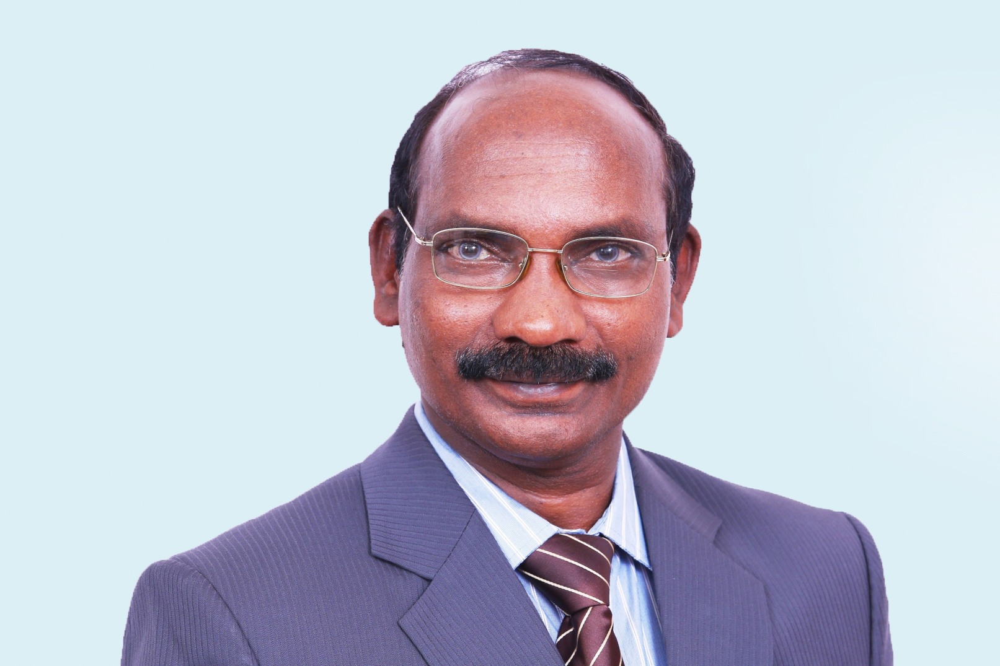
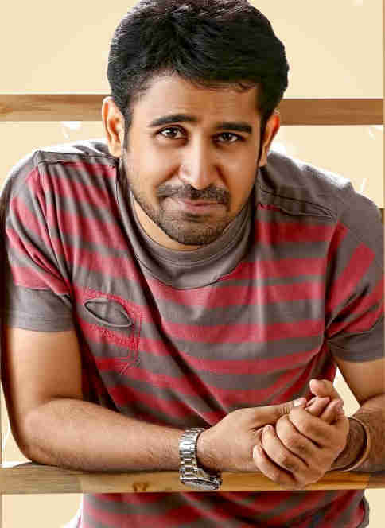

KANYAKUMARI-
THE STARTING POINT

Kailasavadivoo Sivan is an Indian space scientist who served as the Secretary of the Department of Space and chairman of Indian Space Research Organisation and Space Commission. He has previously served as the Director of the Vikram Sarabhai Space Center and the Liquid Propulsion Systems Centre read more

C. Sylendra Babu is an Indian Police Service Officer of the 1987 batch belonging to the Tamil Nadu cadre. He is serving as the Director General of Police of Tamil Nadu. He holds a PhD in Criminology from the University of Madras read more

Vijay Antony (born 24 July 1975) is an Indian music composer, playback singer, actor, film editor, lyricist, audio engineer, and filmmaker working predominantly in Tamil cinema. He made his debut as music composer in 2005. read more